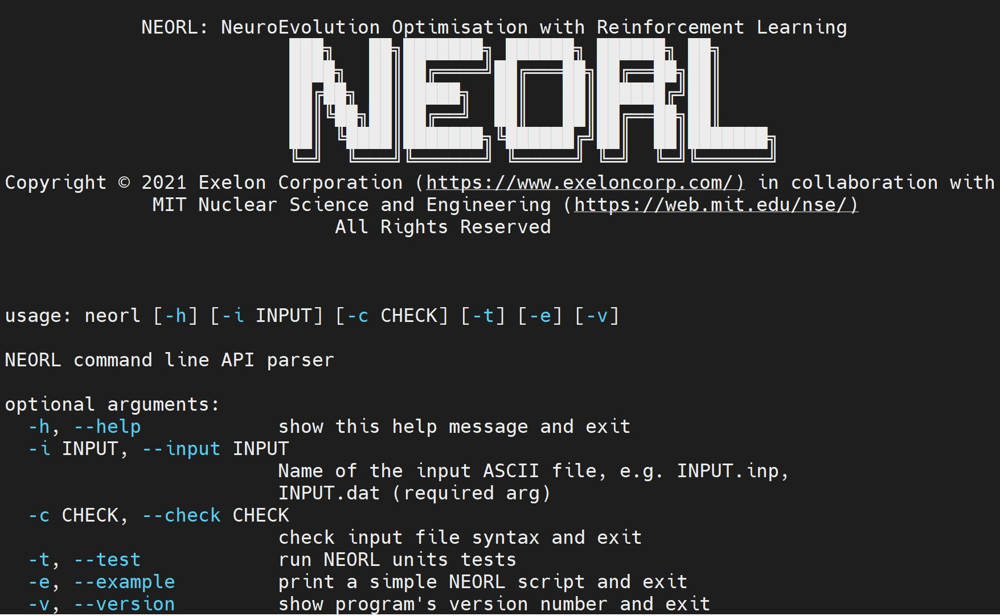

2. Detailed Installation
Use this guide if you are looking for a safe and clean installation of NEORL with all Python tools and package management. If you are an expert Python user and aware of Python virtual environment and package management, see the Quick Installation section.
2.1. Linux/Ubuntu
2.1.1. Step 0: Prerequisites (Anaconda3 Installation)
Anaconda3 will provide you with OS-independent framework that hosts Python packages, including NEORL. If you have Anaconda3 installed on your machine, move to Step 1.
1- First download the Anaconda3 package
wget --no-check-certificate https://repo.anaconda.com/archive/Anaconda3-2026.07-1-Linux-x86_64.sh
2- Start the installer
bash Anaconda3-2026.07-1-Linux-x86_64.sh
3- Follow the instructions on the screen and wait until completion (See the notes below on how to respond to certain prompts)
Note
Choose the default location for installation when asked (e.g. /home/username/anaconda3)
Note
Enter yes when you get this prompt: Do you wish the installer to initialize Anaconda3 by running conda init? [yes|no]
4- You may update the setup tool packages before proceeding
pip install --upgrade pip setuptools wheel
2.1.2. Step 1: Create virtual environment for NEORL
NEORL is tested on python3 (3.10-3.13) with the development headers. Please avoid using newer Python versions, as tensorflow-2.21.0 will be unstable. For older Python versions, please use NEORL 1.8.
Note
NEORL supports tensorflow versions from 2.21.0. Please make sure to uninstall tensorflow if it is already installed in your environment, or ensure you have a compatible version. If tensorflow is left in the virtual environment, NEORL will automatically force tensorflow-2.21.0 for maximum stability. If you require older tensorflow versions, please use NEORL 1.8.
1- Create a new python-3.13 environment with name neorl
conda create --name neorl python=3.13
Warning
For some machines that are not updated frequently (e.g. clusters), TensforFlow may fail to load due to outdated gcc libraries. If you encounter those errors, we typically recommend to downgrade python by using python=3.10, when creating the virtual environment.
2- Activate the environment
conda activate neorl
Warning
You need to run conda activate neorl every time you log in the system, therefore, it is good to add this command to your OS bashrc or environment variables for automatic activation when you log in.
2.1.3. Step 2: Install NEORL
Make sure neorl environment is activated, then run the following command:
pip install neorl
Warning
Depending on your OS, conda command may fail due to unknown reasons. If conda list command fails, then type
conda update -n base -c defaults conda
2.1.4. Step 3: Test NEORL
After an error-free Step 2 completion, you can test NEORL by typing on the terminal:
neorl
which yields NEORL logo
{kind=link}

and you can run unit tests by running:
neorl --test
2.2. Windows 10-11
2.2.1. Step 0: Prerequisites (Anaconda3 Installation)
Anaconda3 will provide you with OS-independent framework that hosts Python packages, including NEORL. If you have Anaconda3 installed on your machine, move to Step 1.
1- First download the Anaconda3 package by visiting the link in the note below and search for Anaconda3-2026.07-1-Windows-x86_64.exe
Note
You can access Anaconda3 archives for all OS installers from this page https://repo.anaconda.com/archive/
or simply click on the link below to download:
https://repo.anaconda.com/archive/Anaconda3-2026.07-1-Windows-x86_64.exe
2- Start the exe installer, follow the instructions on the screen, and wait until completion. See the notes below on what options to choose.
Note
Choose the option “Register Anaconda as your default Python-3.13”.
For the option of “adding anaconda to your PATH variables”, choose this option only if you have cleaned all previous Anaconda3 releases from your machine.
2.2.2. Step 1: Create virtual environment for NEORL
Search for Anaconda Prompt and open a new terminal as an administrator
1- Create a new python-3.13 environment with name neorl
conda create --name neorl python=3.13
2- Activate the environment
conda activate neorl
2.2.3. Step 2: Install NEORL
Make sure neorl environment is activated, then run the following command:
pip install neorl
Warning
Depending on your OS, conda command may fail due to unknown reasons. If conda list command fails, then type
conda update -n base -c defaults conda
2.2.4. Step 3: Test NEORL
After an error-free Step 2 completion, you can test NEORL by typing on the terminal:
neorl
which yields NEORL logo
and you can run unit tests by running:
neorl --test
Warning
You need to run conda activate neorl every time you log in the system, therefore, it is good to add this command to your OS environment variables for automatic activation. Similarly, make sure to connect your Jupyter notebook and Spyder IDE to neorl virtual environment NOT to the default base.